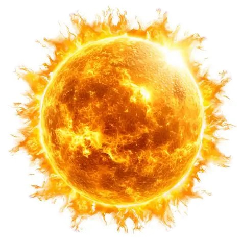
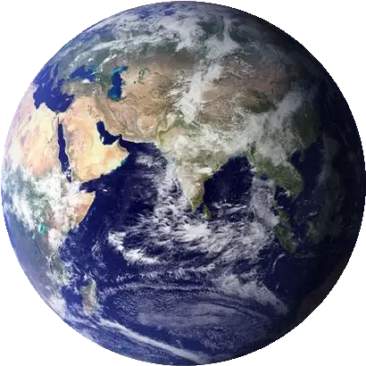

Active Telemetry:
NASA/JPL Horizons + LOLA
01 · Explore · Artemis III Landing Sites
Explore: what does your lander need?
HORIZON SITE NAVIGATOR
Sunlit–
Longest dark–
Earth contact–
–
Mission Requirements
Lander needs
Sunlight at least
▲ more power generation
Longest dark under
▼ battery must survive darkness
Days with Earth contact
▲ direct communications link
Sun & Earth visibility masked by LRO LOLA 80m topographic horizon profile (30 km radius).
Atlas · NASA/JPL Horizons + LOLA
Landing Window Atlas
■ selected ▢ passes all needsred → green = far → meetsclick any square to inspect
01 · Explore · Artemis III Landing Sites
Sky view and compare mode
Sky view & Ephemeris
Sky view
Sun/Earth: NASA/JPL Horizons API. Topographic horizon: NASA LRO LOLA 80m DEM ray-marched (30 km).
View Physics Diagram ↗
N (0°)E (90°)S (180°)W (270°)N (360°)

SOLAR EPHEMERIS
SUNLIT EL: +1.4° · AZ: 120.5°

EARTH TELEMETRY
VISIBLE EL: +4.8° · AZ: 188.2°
Top: sunlight · Bottom: Earth contact · 10 days timeline
Sunlit
Longest dark
Contact days
Verdict
Compare mode
Compare two choices
vs
02 · Decision mode · Prioritization
Decision: set your priorities, get the top 3
Priorities
*Science score: not yet available (needs LRO shadow data). Excluded from decision score in Real Data mode.
Top 3 site and date
No single best answer: each option shows its strengths, weaknesses and how certain it is.
03 · Mission scenario simulator
Scenario: best site for a specific mission
Mission profile
Battery drain per dark hour
Charge per sunlit hour
These battery numbers are our assumptions. Change them. Every site and date is simulated hour by hour.
Best sites for this mission
04 · Explainable decisions & geometry
Explain: why it scored this way, and what would change it
Click any Atlas square to explain it. No black-box AI: every number comes from Sun and Earth geometry.
Why this score
What if...
Sensitivity
05 · Scientist tools
Scientists: check the numbers, export the data
Uncertainty for the selected choice
A landing offset is modelled as a higher horizon (0.3° is about 400 m here, an assumption).
Science target
Permanent-shadow areas near a site (possible ice) need LRO data. Planned.
Data and export
Source: NASA/JPL Horizons API (Center: coord@301) + LRO LOLA 80m DEM topographic mask.
NASA Data Active: JPL Horizons ephemerides + LRO LOLA 80m topographic horizon mask applied.
06 · Flight Simulator Game
Polar Window: the playable form of the simulator
You choose where and when
Battery over 10 days